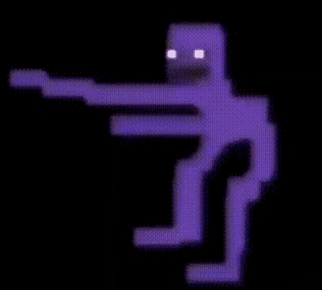

Lugares donde esconder un cuerpo
En tu jardin
Coge una flor en extincion y entierras el cuerpo debajo de esta flor, asi es ilegal el que lo intenten desenterrar :3
Debajo de la cama
Si intentan buscar debajo de tu cama intenta tener un calzoncillo debajo de la cama con una plasta de mierda pegada a este y asi olera como su puta madre en el baño OwO
En el jardin de tu vecino
Tu vecino te cae como el puto culo, por eso vamos a esconder el cuerpo en su jardin, para asi cuando te hagan una investigacion tu digas que tu vecino se ha estado comportando de forma rara y asi inculparle
Ir a nelson
